Recover an interrupted send
Try Chats → Explore interrupted sends. Step through checking, sent, and delivered, or retry a failed send using the same fictional transaction. Real delivery means inclusion in a block, not a read receipt.
Zignal’s real iOS app carries end-to-end encrypted messages in shielded Zcash transactions. Explore the experience below, then see how its privacy design works.
Updated from the Zignal repository’s dev branch at e7bd418 ↗. TestFlight is not public yet. This preview illustrates documented changes; it does not verify the real app’s fixes.
Real app: experimental and not audited.
Browser preview: simulation only.
Simulation: this demo never asks for or creates PINs. The PIN fields of the real screen are left out.
Opens your real profile. At least 6 digits. Forgot it? Restore with your 24-word recovery phrase. Chats can't be restored.
Use this if someone forces you to open Zignal.
• Opens a decoy profile with its own wallet and chats.
• Never deletes anything.
• Both profiles are stored the same way, so a quick look at the phone won't show which one is real.
Tip: open the decoy now and then and keep a little ZEC in it, so it looks like an account you really use.
Your last resort. It can't be undone.
• Quietly erases your real profile from this phone: its chats, wallet data and unlock PIN.
• Then opens the decoy as if nothing happened.
• Your real funds come back only with your 24-word recovery phrase. Keep it written down, away from this phone.
• Erased chats are gone for good.
Pick a PIN you won't type by accident.
Real app: your PINs never leave this phone. Securing them takes a few seconds. Here, no profiles or wallets are created.
The real app asks for the 24 words and the date the wallet was created (“Pick a date on or before you first used this phrase. Earlier is safe but makes the first sync slower.”). The phrase becomes your real profile; chat history isn’t part of a phrase, so chats start empty, and the decoy profile gets a new phrase of its own.
Without it, a lost phone means a lost wallet. (Preview: no recovery phrase exists here.)
Each message is one shielded Zcash transaction and costs about 0.0001 ZEC in network fees. “Prepare” splits your balance into a few notes, once, so several messages can go out in a row.
Fictional contacts reply with local scripts, not AI. No messages leave this page or get encrypted.
No PIN is entered or checked. These are sample screens, not protection against coercion.
No transaction is built, checked, or broadcast. Retry illustrates reuse of a transaction still held by the wallet; if it is unavailable or expired, the real app may need to build another.
Dev moves cleanup after the decoy appears and resumes interrupted cleanup on a later decoy unlock. The source still lists wipe traces as a limitation, not a solved forensic problem.
This browser demo deletes nothing. A real wipe does not erase server records, blockchain transactions, or contacts' copies.
Real app: “Send ZEC from any wallet that supports shielded (Orchard) addresses. It can be spent after 10 confirmations, about 4 minutes. Start small: a few hundred messages cost about 0.03 ZEC.”
Do not send money to anything described in this demo.
Real app: “Off by default. The server you use can see your IP address. With Tor on, it can't for sending and fetching messages, but downloading blocks still connects directly, and the wallet starts more slowly. Your own server hides it completely.” Syncing (block downloads, tree states and subtree roots) is what still connects directly. This switch changes no network settings.
zec.rocks:443na.zec.rocks:443eu.zec.rocks:443us.zec.stardust.rest:443eu.zec.stardust.rest:443zec-node.cakewallet.com:443The real app's defaults on dev: public lightwalletd servers from three operators, not run by Zignal. The first server is used; drag to reorder. Add your own to stop relying on them. Nothing is contacted here.
Real app, under the words:
• Write these 24 words on paper, in order.
• Never photograph them or store them online.
• Anyone with these words controls this profile’s wallet and identity.
• They restore the wallet, not your chats.
Dev hides recovery words until capture status is known, and while recording, mirroring, or sharing. iOS cannot block screenshots; the app warns after one.
Simulated: “A screenshot was taken while the words were showing. Delete it from Photos and from Recently Deleted.” This preview has no words and detects no captures.
These buttons illustrate states only. This page cannot detect or prevent recording, sharing, or screenshots.
No camera, clipboard, or real invites are accessed.
On your contact's phone: New chat, then Scan or paste an invite.
Only one of you scans. If you both scan each other's invite, the chat won't work.
Real app: “Works once: the first person to use it becomes your contact. It holds a new address used only for that contact, and your public keys. Showing it in person is safest; after your first messages, compare safety numbers to mark the contact verified.” This pattern encodes no address, key, or invite.
New contact
DEMO-ONLY · NOT A REAL INVITEReal app: “Paste the invite your contact sent you, or point the camera at their invite. Only one of you scans: if your contact has scanned your invite, don't scan theirs.” Here, a built-in sample opens another local conversation. Never paste a real invite or wallet address into this preview.
Reusing the sample reopens the same fictional contact. The real app refuses a used invite: “You've already used this invite. An invite works only once: ask your contact for a new one if you need to start over.”
Real app: only stored on this phone, encrypted. Never sent.
Real app: “Compare these 60 digits with your contact in person or on a call. If they match, nobody is intercepting your chat, and you can mark the contact as verified.” This preview generates no number and verifies no identity; the switch only changes a local demo mark.
Screenshots of the real Zignal app, not of this simulation. Resized for the web and stripped of file metadata; nothing in them was edited. Shown with the build they come from, so you can see what has changed since.
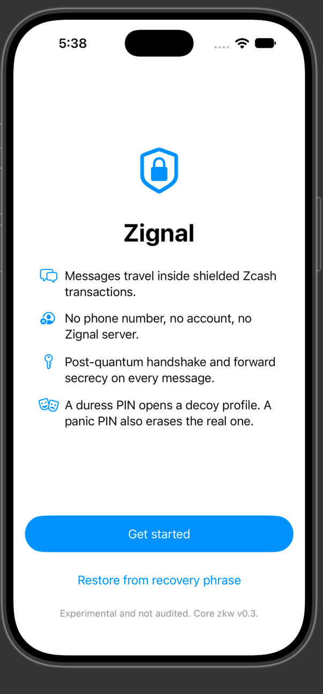
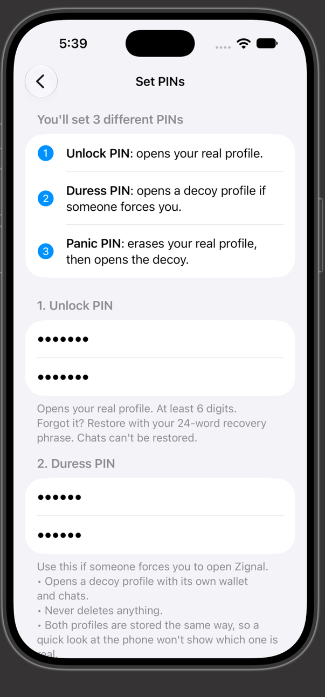
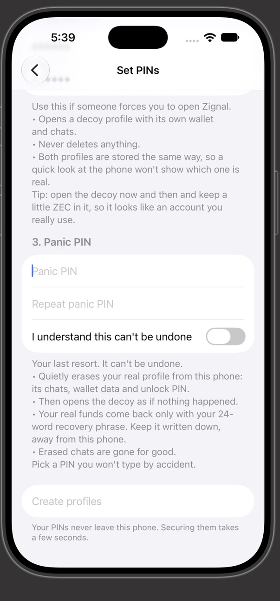
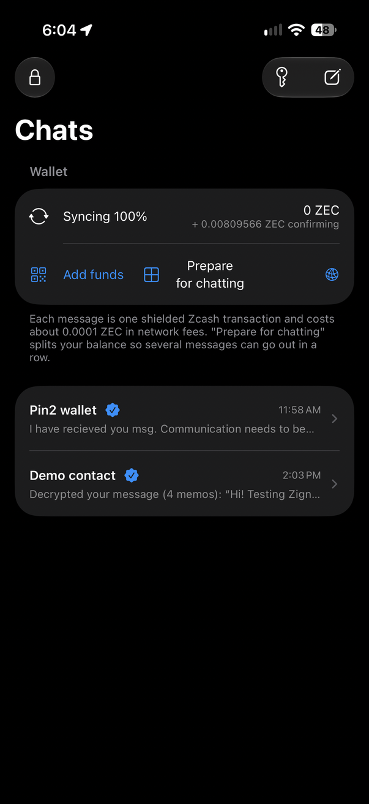
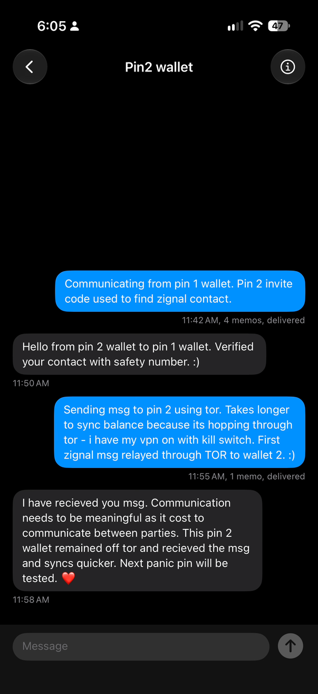
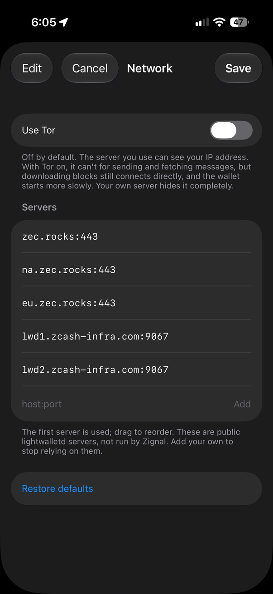
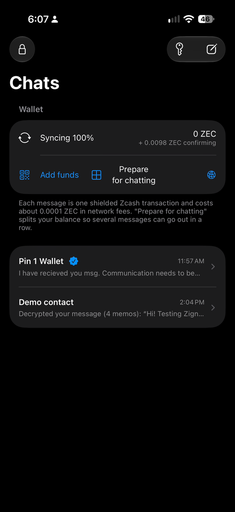
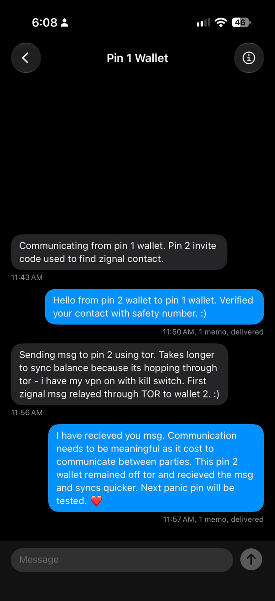
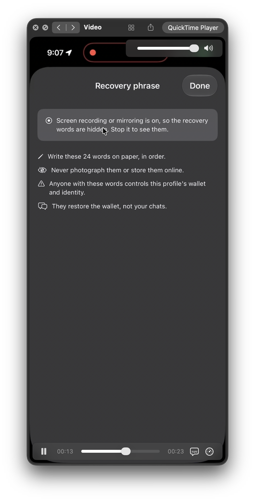
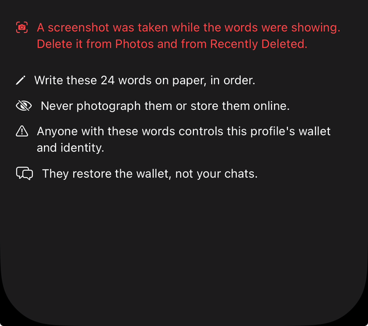
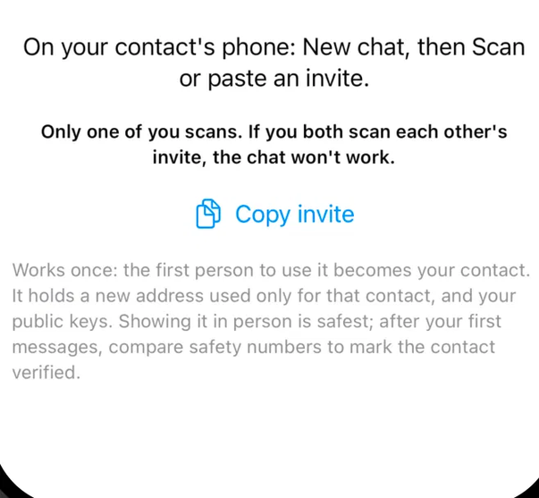
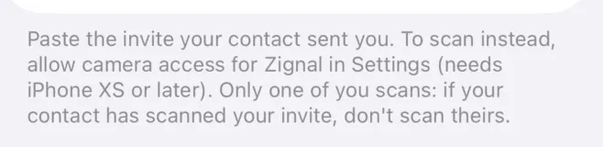
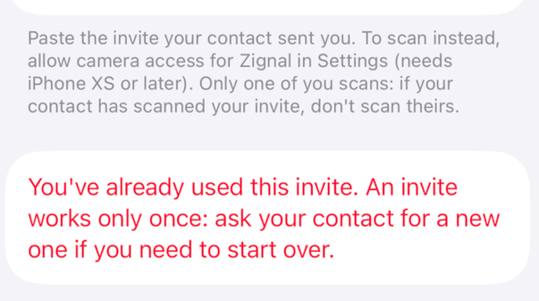
The phone illustrates documented fixes using fictional data. Source inspection is not an independent security audit or an iPhone test.
Read the repository’s dev changes ↗ and latest source commit ↗. The real app remains experimental and unaudited.
In the real iOS app, a message is encrypted by Zignal and carried inside a shielded Zcash transaction. The browser phone above is only a simulation: it does neither.
According to the project’s documentation, a wallet viewing key can reveal ordinary Zcash memos, but Zignal’s additional end-to-end layer leaves its message content as ciphertext to someone with only that key.
A comparison with an ordinary Zcash wallet memo—not a claim about every messaging or wallet app.
Based on the repository’s dev documentation, revision e7bd418: protocol at a glance ↗.
These descriptions refer to the real iOS app’s dev branch, not this browser preview. Zignal is experimental and has not been audited.
The app carries messages in shielded Zcash transactions. It adds a post-quantum hybrid handshake and a Double Ratchet on top of Zcash memo encryption. Messages have network fees and are not instant.
Zignal describes no Zignal server, account, or phone number. Contacts use a single-use invite and can compare safety numbers. Messages arrive while the app is open and synced; there are no push notifications.
The real app describes an unlock PIN, a duress PIN for a decoy, and a panic PIN that erases the real profile on the phone. The PIN vault is sealed by the iPhone’s Secure Enclave. A wipe cannot be undone, can leave traces, and does not remove other copies.
Dev no longer queries transparent addresses during sync. With Tor off, the server still sees your IP and transaction activity. Tor covers sending and fetching; syncing still connects directly. Privacy is not a guarantee.
The repository documents additional limitations, including device forensics, recovery, panic PIN traces, and network privacy. Read the real app’s security notes ↗
Shielded transactions and encrypted messages do not automatically hide your IP address or connection timing. The real app lets you choose a lightwalletd server and optionally use Tor.
Instead of a public lightwalletd provider, run a compatible Zcash node with lightwalletd and point the real app’s Network settings at your server. Your wallet requests go to infrastructure you control, rather than a public lightwalletd operator.
Self-hosting shifts responsibility for the server’s security and operation to you. Hosting providers, network observers, and node peers may still see connection metadata; it is not anonymity by itself.
About running lightwalletd ↗With Tor enabled in the real app, sends and transaction fetches use Tor; syncing (block downloads, tree states and subtree roots) still connects directly. A VPN can put those connections behind the VPN’s IP address; a kill switch can block traffic if the VPN disconnects.
A VPN shifts trust to its provider, which can see your IP and connection metadata. Choose carefully: a no-logs claim is not proof. VPNs do not change on-chain data or protect an unlocked device.
* Tor covers sends and fetches in the current real app; syncing (block downloads, tree states and subtree roots) still connects directly. With a home server, a VPN kill switch that blocks local network access may prevent the app from reaching it; local access or a suitable VPN route may be needed. This demo makes none of these connections.
Based on the repository’s dev documentation, revision e7bd418: network privacy ↗.
Ideas and planned work, not features of this demo or promises of release. Priorities and timing may change; there are no dates in the source roadmap.
Explore padding messages to fixed memo counts, so fees reveal less about their length. Today, fees can indicate roughly how many memos were used.
Post-quantum protection for every message is listed as later work. Today the hybrid post-quantum component is in the initial handshake.
Plan one-time prekeys, contact-reset notices, and revocation of unused invites. A contact-requests inbox with accept and block is also proposed.
Proposals include showing memos from other wallets, sending plain memos to shielded wallets, and wallet import—with a warning that history can link messaging addresses.
More checkpoints so restores with an earlier date don’t scan from June (new wallets already start near the chain tip), a newer Tor library when compatible, and asking whether ZODL’s Oblivious HTTP relay can be used or licensed.
TestFlight is not public yet: the roadmap says private testing first, then a public link. For now, the source describes building with Xcode. Android and a prebuilt SDK library remain planned.
NU7 compatibility is listed as done on dev and nu7, not as a future feature. The real app remains experimental and unaudited.
Summarized from the repository’s dev roadmap at revision e7bd418 ↗. See the latest project documentation for changes.